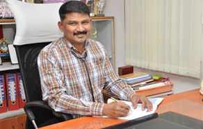

contact us:+91 861 2347276
ABOUT THE FOUNDER
Unquenchable consequence of thirst to serve the human kind especially childcare Dr. T. Ravi Kumar, M.D., D.C.H., has established in Nellore, Ravi Institute of Child Health (P) Ltd, the premier sophisticated super-specialty pediatric hospital to offer wide range of facilities for children with in the age group of 0-18 years providing a unique and expensive Pediatric Intensive Care in Costal Area of Andhra Pradesh to serve the poor and needy children. Dr. T. Ravi Kumar M.D., D.C.H. hailing from a middleclass family from a remote village named Kalichedu of Nellore district, Andhra Pradesh, Where he used to walk 6km for his schooling.Here at this early stage has paved a strong desire and urge deep in his conscience to do best for his village which in turn have opened his vision to serve the poor and needy who are deprived of basic medical facilities. This caused a strong desire to study medicine which is the only way to serve the poor and needy children. He has done his Graduation in Medicine in Kurnool Medical College, Kurnool. He persecuted Post Graduation Studies in Pediatrics in Government Medical College in Kurnool, Andhra Pradesh.
Dr. Ravi Kumar’s fondest desired to equip himself with new trends in the frontiers of modern medicine namely Neonatology at Niloufer Hospital, Hyderabad. He also trained in advanced ventilation at KKCT in Chennai.
He has taken over the reins of medical private practice for more than 16 years as one of the pioneer Pediatricians. During this period he could successfully treat over millions of patients and by his untiring efforts could able to conduct a 1000’s of Neonatal procedures and more than 850 Pediatric Procedures. He has presented 10 papers on various current aspects of pediatrics at different national conferences. He also actively participated in many a prestigious national and international pediatric conference by which opened a new chapter in child care in the entire Coastal belt of Andhra Pradesh. As a visionary he believes in CME and often conducts many training programs for the RMP’s, PMP’s, ANM’s and GNM’s in the Rural areas of Nellore District to find the Root Cause such that early identification and intervention can be provided to reduce the mortality among the children.
Veins of Compassion and his strongest desire to serve the children and weaker sections enabled Dr. Ravi Kumar to establish a Voluntary Charitable Trust called Vasantha Lakshmi Charitable Trust and Research Centre in the year 1993 for the purpose of service and incorporated under Indian Trust Act 1882 on the 10th Day of September 1998. Making this as his cradle, he conducted more than 10,000’s of free medical/ awareness camps and free vaccination camps benefiting millions of people from Nellore Cuddapah and Ongole Districts.
He has conducted more than 1000’s of primary, secondary Pediatric Health Check-up programs where in more than lakhs of people were tested to identify Mental Retard children and owe them to give medical treatment and to detect early Invisible disabilities like Development delays, Poor memory, Speech & hearing problems, Psychosocial problems, Nutritional deficiencies, Specific learning disability etc.
As an author deep in his feelings has freelanced and published many number of books to name a few such as:
- A practical guide to parents written on common problems in children-house hold remedies.
- A useful book on child growth and development written in Telugu language “Chinna Pillala Aarogyam – Avagaahana – Chikitsya.
- Written more than 200 articles on Child problems published in National newspapers and magazines.